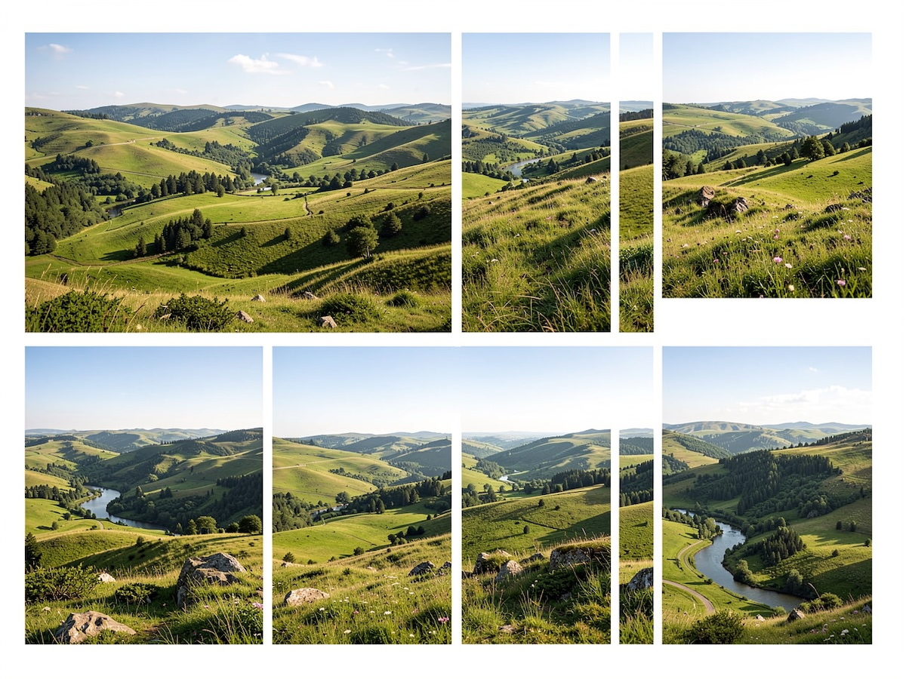

Mobil Fotoğrafta Doğru Boyut Seçimi: Hangi Ebat Nerede Kullanılır?

Mobil fotoğrafçılık artık sadece anı yakalamak değil; doğru ebatı seçerek fotoğrafın etkisini maksimuma çıkarmak anlamına geliyor. Aynı fotoğraf, farklı platformlarda farklı boyutlarda kullanıldığında ya mükemmel görünür ya da kalitesiz ve amatör durur. Bu yazıda mobil fotoğrafçılıkta en doğru fotoğraf ebatlarını, hangi platformda hangi ölçünün kullanılacağını ve profesyonel ipuçlarını detaylı şekilde ele alıyoruz.
Fotoğraf Ebatı Neden Bu Kadar Önemli?
Mobil çekimlerde doğru ebat seçimi şu avantajları sağlar:
- Görüntü kalitesini korur
- Kırpılmayı önler
- Platform algoritmalarında daha iyi performans sağlar
- Profesyonel görünüm oluşturur
- Dosya boyutunu optimize eder
Yanlış ebat kullanımı ise net fotoğrafı bile amatör gösterebilir.
Temel Fotoğraf En-Boy Oranları (Aspect Ratio)
Mobil fotoğrafçılıkta en sık kullanılan oranları bilmek işinizi çok kolaylaştırır.
1:1 (Kare Format)
- Özellikle Instagram gönderileri için idealdir
- Dengeli ve sade görünüm sunar
- Ürün fotoğrafçılığında sık kullanılır
Ne zaman kullanmalı?
- Ürün çekimleri
- Minimal kompozisyonlar
- Profil fotoğrafları
4:5 (Dikey Sosyal Medya Formatı)
- Instagram feed için en verimli formattır
- Ekranda daha fazla yer kaplar
- Etkileşimi artırır
Ne zaman kullanmalı?
- Portre fotoğrafları
- Mekân çekimleri
- Sosyal medya paylaşımları
16:9 (Yatay Geniş Format)
- Video ve YouTube kapakları için uygundur
- Manzara çekimlerinde etkilidir
- Sinematik görünüm verir
Ne zaman kullanmalı?
- Manzara
- YouTube kapak görselleri
- Blog kapak fotoğrafları
9:16 (Tam Dikey Format)
- Reels, Shorts ve TikTok için standarttır
- Mobil ekranı tamamen doldurur
- Hikâye formatının temelidir
Ne zaman kullanmalı?
- Reels
- Hikâyeler
- Dikey video kapakları
Platformlara Göre İdeal Fotoğraf Boyutları
Feed (dikey)
- 1080 × 1350 px (4:5) — en önerilen
Kare gönderi
- 1080 × 1080 px
Story / Reels kapağı
- 1080 × 1920 px (9:16)
İpucu: Instagram fotoğrafları 1080 px genişliğe sıkıştırır. Daha büyük yüklemek kaliteyi artırmaz.
YouTube
Küçük resim (thumbnail)
- 1280 × 720 px (16:9)
Kanal kapak görseli
- 2560 × 1440 px
İpucu: Thumbnail’da metin kullanıyorsanız ortada konumlandırın.
Blog ve Web Siteleri
Önerilen blog kapak
- 1200 × 675 px (16:9)
Yazı içi görseller
- 800 × 600 px veya 1200 px genişlik
İpucu: Dosya boyutunu 200–400 KB aralığında tutmak sayfa hızını korur.
WhatsApp ve Profil Fotoğrafları
Profil fotoğrafı
- 500 × 500 px (minimum)
- Kare format önerilir
Durum (Status)
- 1080 × 1920 px
Mobil Çekimde Çözünürlük Seçimi
Telefonunuz genellikle 12 MP, 48 MP veya daha yüksek çözünürlük sunar. Peki hangisini kullanmalısınız?
12 MP yeterlidir:
- Sosyal medya
- Günlük paylaşımlar
- Hikâyeler
Yüksek MP tercih edin:
- Baskı alınacaksa
- Croplama yapılacaksa
- Stok fotoğraf yüklenecekse
Unutmayın: Yüksek MP her zaman daha iyi fotoğraf demek değildir; ışık ve kompozisyon daha kritiktir.
Baskı (Print) İçin Fotoğraf Ebatları
Eğer mobil çektiğiniz fotoğrafı bastıracaksanız şu ölçüler önemlidir:
- 10×15 cm → minimum 1200×1800 px
- 20×30 cm → minimum 2400×3600 px
- Poster → mümkünse 300 DPI
Altın kural: Baskı için her zaman yüksek çözünürlükle çekim yapın.
Profesyonel Mobil Fotoğrafçılık İpuçları
Kadrajı Çekim Anında Planlayın
Sonradan kırpmak kalite kaybettirir. Hangi platformda paylaşacağınızı önceden düşünün.
Telefon Kamera Ayarlarını Kontrol Edin
- Grid (ızgara) açık olsun
- HDR duruma göre kullanılmalı
- HEIF yerine JPEG gerekebilir (uyumluluk için)
Gereksiz Büyük Dosyalardan Kaçının
Sosyal medya için dev boyutlar yüklemek kaliteyi artırmaz, sadece depolama tüketir.
Netlik > Megapiksel
İyi ışık + doğru odak = profesyonel görünüm.
Sık Yapılan Hatalar
Mobil fotoğrafçılıkta en çok görülen hatalar:
- Yanlış en-boy oranında çekim
- Story için yatay fotoğraf kullanmak
- Düşük çözünürlükte kırpma yapmak
- Aşırı sıkıştırılmış görsel yüklemek
- Platforma göre yeniden boyutlandırmamak
Bu hatalar fotoğrafın kalitesini ciddi şekilde düşürür.
Sonuç: Doğru Ebat = Daha Profesyonel Görünüm
Mobil fotoğrafçılıkta başarı sadece iyi çekim yapmakla bitmez. Fotoğrafın nerede kullanılacağını bilmek ve doğru ebatı seçmek, içeriğin profesyonel görünmesini sağlayan en kritik adımlardan biridir.
Özetle:
- Sosyal medya için 4:5 ve 9:16
- Blog ve YouTube için 16:9
- Profil fotoğrafları için 1:1
- Baskı için yüksek çözünürlük
Bu prensiplere dikkat ederek mobil çekimlerinizi çok daha etkili ve profesyonel hale getirebilirsiniz.